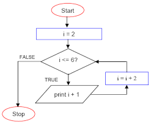

Pętla While
Konstrukcja
let i=0;
while(i<=10)
{
document.write("Hello world!");
i++;
}
Opis
Pętla while to jedna z podstawowych konstrukcji programistycznych
służąca do powtarzania fragmentu kodu,
dopóki warunek logiczny jest spełniony (czyli true).
